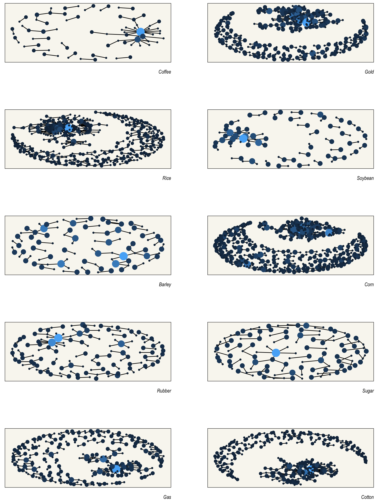

get_started.RmdThe premise of phrasenets is very simple: to help you build “phrase nets.” These are very easy, in fact, if you know your way around you probably won’t need this package at all.
It’s almost too simple, it connects words according to “connectors” of your choosing, e.g.:
The default connectors are to, in, at, and, and of.
The phrase_net function simply returns a lsit of edges and the number of times these were found in the body of text.
library(phrasenets)
data(reuters)
phrase_net(reuters, text = text) %>%
head() %>%
knitr::kable()| preceding | following | occurences |
|---|---|---|
| 0.50 | 0.64 | 1 |
| 0.50 | 104 | 1 |
| 0.50 | 85 | 1 |
| 0.58 | 0.50 | 1 |
| 0.64 | 0.50 | 1 |
| 062 | 19 | 1 |
The package also comes with a convenience function filter_net to filter out any edges that contains specific words. Below we remove edges with the and a and use the plot_sigmajs to easily plot the network using sigmajs.
reuters %>%
phrase_net(text = text) %>%
filter_net(c("a", "the")) %>%
dplyr::filter(occurences > 5) %>%
plot_sigmajs()The dataset provided (reuters) contains articles on 10 difference commodities, let’s plot their respective phrasenets.
library(dplyr)
#> Warning: package 'dplyr' was built under R version 3.5.2
#>
#> Attaching package: 'dplyr'
#> The following objects are masked from 'package:stats':
#>
#> filter, lag
#> The following objects are masked from 'package:base':
#>
#> intersect, setdiff, setequal, union
library(purrr)
#> Warning: package 'purrr' was built under R version 3.5.2
library(ggraph)
#> Warning: package 'ggraph' was built under R version 3.5.2
#> Loading required package: ggplot2
#> Warning: package 'ggplot2' was built under R version 3.5.2
library(tidygraph)
#> Warning: package 'tidygraph' was built under R version 3.5.2
#>
#> Attaching package: 'tidygraph'
#> The following object is masked from 'package:stats':
#>
#> filter
# create a graph for each commodity
subgraphs <- reuters %>%
group_split(category) %>%
map(phrase_net, text = text) %>%
map(filter_net, c("a", "the")) %>%
map(filter, occurences > 1) %>%
map(as_tbl_graph) %>%
map(function(x){
mutate(x, size = centrality_degree())
})
plot_it <- function(g, commodity){
ggraph(g, layout = 'kk') +
geom_edge_fan(show.legend = FALSE) +
geom_node_point(aes(size = size, colour = size), show.legend = FALSE) +
theme_graph(
background = "#f9f7f1"
) +
labs(caption = tools::toTitleCase(commodity))
}
commodities <- unique(reuters$category)
map2(subgraphs, commodities, plot_it) %>%
patchwork::wrap_plots(ncol = 2) &
theme(
panel.background = element_rect(fill = "#f9f7f1"),
plot.background = element_rect(fill = "#f9f7f1")
)